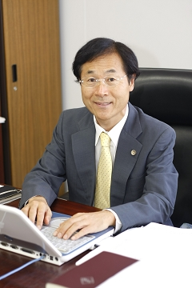

特定非営利活動法人 広島経済活性化推進倶楽部
理事長 山下 江

２００６年７月、私が理事長となっての第１回目の役員会が開催されました。ＮＰＯ法人広島経済活性化推進倶楽部の新たな船出です。 従来からの理事や新たな理事も加え、若い役員の方々の熱意の支えられての再スタートとなりました。もっとも、私も皆川理事も、精神的な「若さ」では負けないつもりですが・・・
再スタートにあたって、私が方針としたいことは、同倶楽部発足の原点に戻り、ベンチャー企業支援を中心軸とすることです。すなわち、ベンチャー企業とエンジェル（投資家）、そして、経・営・法などの専門家の３者のマッチングにより、広島を中心とした経済の活性化を図っていくことです。確かに、５年前の同倶楽部発足当時における、いわゆる銀行の「貸し渋り」は最近では少なくなっております。しかし、起業家精神、アイディア、斬新な技術などがありながら、資金不足から、立ち上がり切
れていないベンチャー企業も今だ多く存在していることも事実です。
また、お金を持ちながら有効に利用できておらず、ベンチャー企業の夢に掛けたい（投資したい）というエンジェルも少なからず存在しております。いうまでもなく「ベンチャー」とは「冒険」ですから、当然ながらリスクを伴います。起業家は失敗すれば破産ということにもなりかねないし、エンジェルは失敗すれば投資資金は回収できない事となります。しかし、このようなリスクがありながら、なぜ私たちは「ベンチャー」に魅力を感じ、その支援を行おうとするのでしょうか。
もちろん、成功した場合のリターンの大きさがあるのは当然ですが、それ以上に、ベンチャー企業には、現状を打破して新しいものを生み出そうとする力、未解決の難題への挑戦、生活上の不便や不満などの解決策の呈示など、人類を幸福にすることへの挑戦があるからではないでしょうか。
そしてベンチャー企業の成功は、新たな産業創出による雇用情勢の改善や経済活性化なども当然伴うことになります。
私たちは、行政機関でも金融機関でもない一般市民の団体ですが、逆に、市民団体故の自由もあります。その利点を生かして、今後の活動を展開していこうと思います。
みなさんのご協力、ご支援をお願いします。